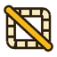

Selection and transform
Selection and transform
Five selection tools, shared combination modes and the transform frame.
Selection tools
Rectangular marquee (M), Elliptical marquee (Shift+M), Lasso (Q), Polygonal lasso (Shift+Q) and Magic wand (W). Each one is described on the Tools page.
Modes
| Mode | Menu | Keyboard |
|---|---|---|
| Replace | Select > Mode > Replace | default |
| Add | Select > Mode > Add | Shift |
| Subtract | Select > Mode > Subtract | Ctrl or Alt |
| Intersect | Select > Mode > Intersect | Shift+Ctrl |
The Select menu
- Select all (Ctrl+A) - select the whole canvas.
- Select opaque pixels - select all opaque pixels of the active layer and frame.
- Invert selection - invert it.

Deselect (Ctrl+D).- Expand / Shrink - grow or shrink the selection by the Amount (px) value (1 by default).
 Magic Wand - the Contiguous checkbox and the Tolerance slider.
Magic Wand - the Contiguous checkbox and the Tolerance slider.
If the Select all layers checkbox is on, transforming and deleting the selected pixels applies to all visible unlocked layers of the current frame. Otherwise only the active layer is affected.
What you can do with a selection
- Move - drag inside the selection, or use the Move tool (V). Esc cancels the drag.
- Delete pixels - Delete.
- Copy / paste - Ctrl+C / Ctrl+V (
Edit > Copy selection/Paste selection). If the system image clipboard is unavailable, the copy stays inside SpriteForge. - Rotate selection 90 degrees, Flip selection horizontally / vertically - commands of the
Editmenu. - Limit drawing - any drawing tool works only inside the selection. The "Selection active" indicator and the Deselect pixels button are shown in Tool settings.
- Become a stamp - Pencil → Copy selection to pencil (an area no larger than 32 x 32).
The transform frame
When a selection is chosen, a frame with handles appears around it:
- Squares - resize.
- Circle - rotate. Ctrl snaps the direction and angle to 45 degree steps.
- Blue and green diamonds - symmetric skew around the center along the axes of the rotated image.
- Purple corners - independent distortion (distort): each corner moves separately. Esc restores the previous shape.
- Inside the frame - move.
While dragging, a tooltip shows the amount of skew in pixels. The result is rasterized to the pixel grid.